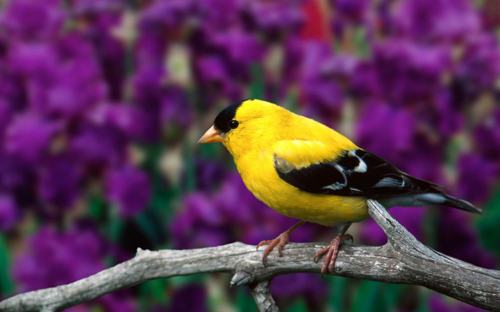

Adopt a Bird

Characteristics
- Colorful, intelligent, and full of personality
- Social and enjoy companionship
- Can be taught to mimic sounds and words
- Active and playful with strong bonding instincts
- Highly alert and responsive to their environment
Care Guidelines
- Provide a spacious and secure cage with toys
- Maintain a consistent daily routine
- Feed a balanced diet of seeds, pellets, fruits, and veggies
- Give daily interaction and mental stimulation
- Ensure safe, supervised flying time outside the cage
Grooming & Maintenance
- Offer clean water for drinking and bathing
- Trim nails carefully if needed
- Check beak and feather condition regularly
- Clean the cage frequently to prevent illness
- Ensure a dust-free, well-ventilated environment
Fun Facts About Birds
- Birds can see ultraviolet light—something humans can't!
- Some parrots can live over 50 years with proper care
- Birds communicate through calls, songs, and body language
- They preen to keep feathers in top condition
- The birds in the image are showing affection—birds often bond for life!